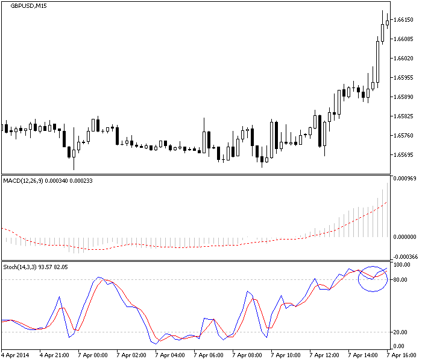
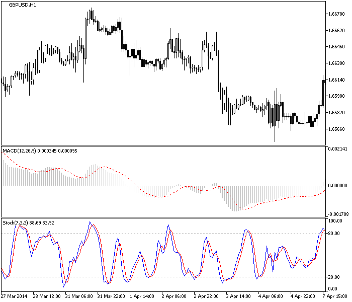
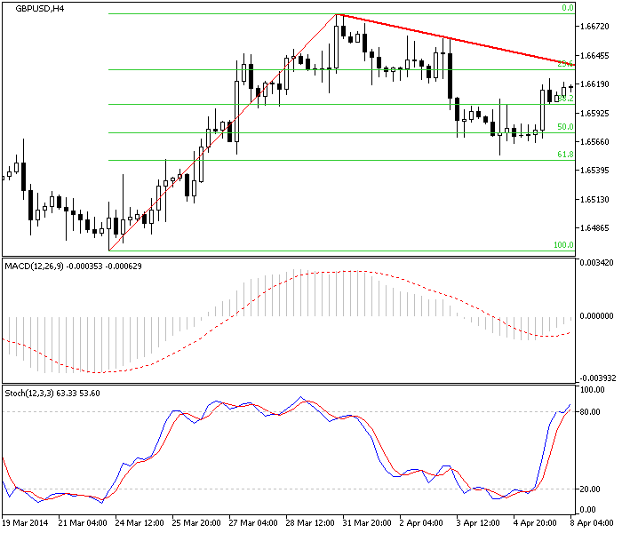
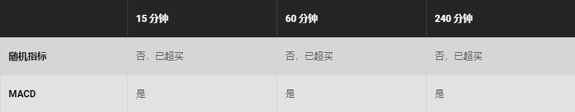

<!DOCTYPE html>
<html>
</html>
<head>
  <meta charset="utf-8">
  <meta http-equiv="X-UA-Compatible" content="IE=edge">
  <title>外汇站（fx-z.com） - 多时间周期分析（MTF）</title>
  <meta name="description" content="">
  <meta name="viewport" content="width=device-width, initial-scale=1">
  <meta name="robots" content="all,follow">
  <!-- Bootstrap CSS-->
  <link rel="stylesheet" href="vendor/bootstrap/css/bootstrap.min.css">
  <!-- Font Awesome CSS-->
  <link rel="stylesheet" href="vendor/font-awesome/css/font-awesome.min.css">
  <!-- Google fonts - Roboto-->
  <link rel="stylesheet" href="https://fonts.googleapis.com/css?family=Roboto:400,300,700,400italic">
  <!-- owl carousel-->
  <link rel="stylesheet" href="vendor/owl.carousel/assets/owl.carousel.css">
  <link rel="stylesheet" href="vendor/owl.carousel/assets/owl.theme.default.css">
  <!-- theme stylesheet-->
  <link rel="stylesheet" href="css/style.default.css" id="theme-stylesheet">
  <!-- Custom stylesheet - for your changes-->
  <link rel="stylesheet" href="css/custom.css">
  <!-- Favicon-->
  <link rel="shortcut icon" href="img/favicon.png">
  <!-- Tweaks for older IEs--><!--[if lt IE 9]>
    <script src="https://oss.maxcdn.com/html5shiv/3.7.3/html5shiv.min.js"></script>
    <script src="https://oss.maxcdn.com/respond/1.4.2/respond.min.js"></script><![endif]-->
</head>
<body>
  <div id="all">
    <div class="container-fluid">
      <div class="row row-offcanvas row-offcanvas-left"> 
        <!--   *** SIDEBAR ***-->
        <div id="sidebar" class="col-md-4 col-lg-3 sidebar-offcanvas">
          <div class="sidebar-content">
            <h1 class="sidebar-heading"> <a href="https://fx-z.com">fx-z.com</a></h1>
            <p class="sidebar-p">介绍外汇相关的基本知识，告诉您如何进行自己的技术面和基本面分析，讲解先进的交易理念，并且为您阐述失败交易者与专业交易者之间的真正区别。 </p>
            <p class="sidebar-p">通过这些课程的学习，您将学会如何根据自己的优势来应用情绪分析，还将了解真实世界的事件会对货币汇率产生什么影响，央行在外汇市场中所发挥的作用，以及交易者在颇受欢迎的即期外汇交易中有哪些选择方案。 </p>
            <ul class="sidebar-menu">
                <!-- Link-->
                <li class="sidebar-item"><a href="https://fx-z.com" class="sidebar-link">首页</a></li>
                <!-- Link-->
                <li class="sidebar-item"><a href="cihui.html" class="sidebar-link">外汇词汇</a></li>
                <!-- Link-->
                <li class="sidebar-item"><a href="ebook.html" class="sidebar-link">获取外汇电子书</a></li>
            </ul>
            <p class="social"><a href="https://www.cn-forextime.com/zh?partner_id=4920383" target="_blank"data-animate-hover="pulse" class="external facebook"><i class="fa fa-eur"></i></a><a href="https://www.cn-forextime.com/zh?partner_id=4920383" target="_blank" data-animate-hover="pulse" class="external gplus"><i class="fa fa-gbp"></i></a><a href="https://www.cn-forextime.com/zh?partner_id=4920383" target="_blank" data-animate-hover="pulse" class="external twitter"><i class="fa fa-rmb"></i></a><a href="https://www.cn-forextime.com/zh?partner_id=4920383" target="_blank" title="" class="external instagram"><i class="fa fa-dollar"></i></a><a href="https://www.cn-forextime.com/zh?partner_id=4920383" target="_blank" data-animate-hover="pulse" class="email"><i class="fa fa-money"></i></a></p>
            <div class="copyright text-center text-md-left">
             
              
            </div>
          </div>
        </div>
        <!--   *** SIDEBAR END ***  -->
        <!--   *** DETAIL ***-->
        <div class="col-md-8 col-lg-9 content-column white-background">
          <div class="small-navbar d-flex d-md-none">
            <button type="button" data-toggle="offcanvas" class="btn btn-outline-primary"> <i class="fa fa-align-left mr-2"></i>菜单</button>
            <h1 class="small-navbar-heading"> <a href="https://fx-z.com/13-1.html">下一篇 </a></h1>
          </div>
          <div class="row">
            <div class="col-xl-10">
              <div class="content-column-content">
                <h1>多时间周期分析（MTF）</h1>
   <p>
    许多交易者发现，如果您在三个不同的时间周期试探价格行为，而且仅在三种周期达成一致后交易，您的亏损交易数量将减少。您的总交易数量也会减少，这或许是多时间周期原则未能被广泛遵循的原因。
</p>
<p>
    时间周期的具体组合并不重要——您能够使用 1 小时（H1）和 6 小时（H6），或 2 小时（H2）和 1 天（D1），或 1 天（D1）+ 1 周（W1）+ 1 月（MN），或任何您偏好的组合。关键是要进行验证。由于外汇行情中有回落和虚假突破，测试多个时间周期能提高正确识别任何特定走势的几率。
</p>
<p>
    <strong>在外汇中，大多数交易者是日内交易者（持有期小于一天），而且最常用到的时间周期组合是：</strong>
</p>
<p>
    5 分钟（M5）或 15 分钟（M15）
</p>
<p>
    1 小时（H1）
</p>
<p>
    4 小时（H4）
</p>
<p>
    <strong>另一个常用设置是：</strong>
</p>
<p>
    5 分钟（M5）
</p>
<p>
    15 分钟（M15）
</p>
<p>
    1 小时（H1）
</p>
<p>
    <strong>案例分析</strong>
</p>
<p>
    以下为 EUR/USD 15 分钟时间周期图表。GBP 正在强势上涨。您应该为了进一步的涨幅而买入吗？中间窗口的随机指标表示，该时间周期内的 GBP 已经被超买，虽然MACD 显示它仍有上涨空间。本图表告诉您，您已经赶不上本轮走势。
</p>
<p>
     根据 M15 时间周期上的随机指标，GBP/USD 已经被超买。
</p>
<p>
    现在我们来看看每小时图表上的相同信息。在这一视图中，随机指标显示英镑已经被超买，而 MACD 显示还有上涨空间。
</p>
<p>
     根据 H1 时间周期上的随机指标，GBP/USD 也已进入超买状态。
</p>
<p>
    最后，请查看 240 分钟（H4）图表上的指标。图表加入了斐波那契数列，并显示回落略低于 62% 回调位。因此，可能会出现强劲的向上反弹。有多强劲呢？至少会反弹至红色阻力线。请注意，若要使用这些线条来衡量回落程度，您无需相信斐波那契背后的理论。
</p>
<p>
     H4 时间周期显示 GBP/USD 仍有上涨空间。
</p>
<p>
    我们应该买入 GBP 吗？
</p>
<p>
     
</p>
<p>
    本例中，指标（MACD）在所有时间周期上达成一致，认为买入 GBP 是一项利好交易。理想情况下，您希望另一项指标与 MACD 达成一致，而本例中并不需要。如果我们相信随机指标，则走势已经进入超买状态，而且随时都可能结束。因此，如果我们做多 GBP 交易，则我们需要迅速离场。但手绘红色阻力位为我们提供了盈利目标。
</p>
<p>
    使用多个时间周期是一项用来减少错误的行之有效的技巧，即使该过程会花费额外的时间。不过，它无需花费太多的时间——您可以很快地学会在图表的不同时间周期之间切换。如果您使用趋势跟随指标，多时间周期在价格进入趋势状态时效果最佳，在价格进入区间盘整状态时效果不佳或完全起到误导作用。
</p>
<p>
    <br/>
</p>
<p>
    <br/>
</p>
              </div>
            </div>
          </div>
        </div>
      </div>
    </div>
  </div>
  <!-- JavaScript files-->
  <script src="vendor/jquery/jquery.min.js"></script>
  <script src="vendor/popper.js/umd/popper.min.js"> </script>
  <script src="vendor/bootstrap/js/bootstrap.min.js"></script>
  <script src="vendor/jquery.cookie/jquery.cookie.js"> </script>
  <script src="vendor/owl.carousel/owl.carousel.min.js"></script>
  <script src="vendor/masonry-layout/masonry.pkgd.min.js"></script>
  <script src="js/front.js"></script>
</body>